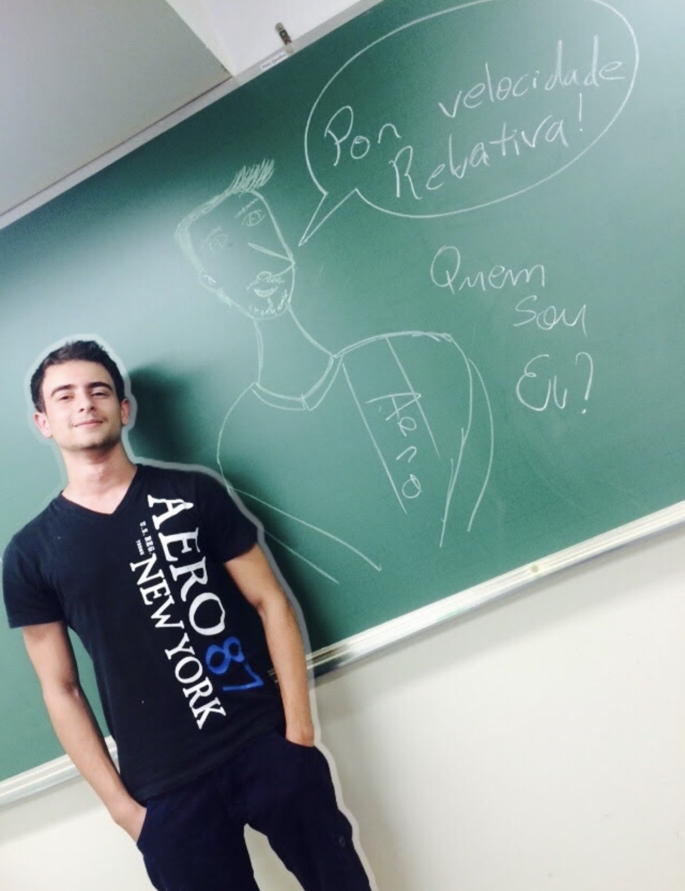
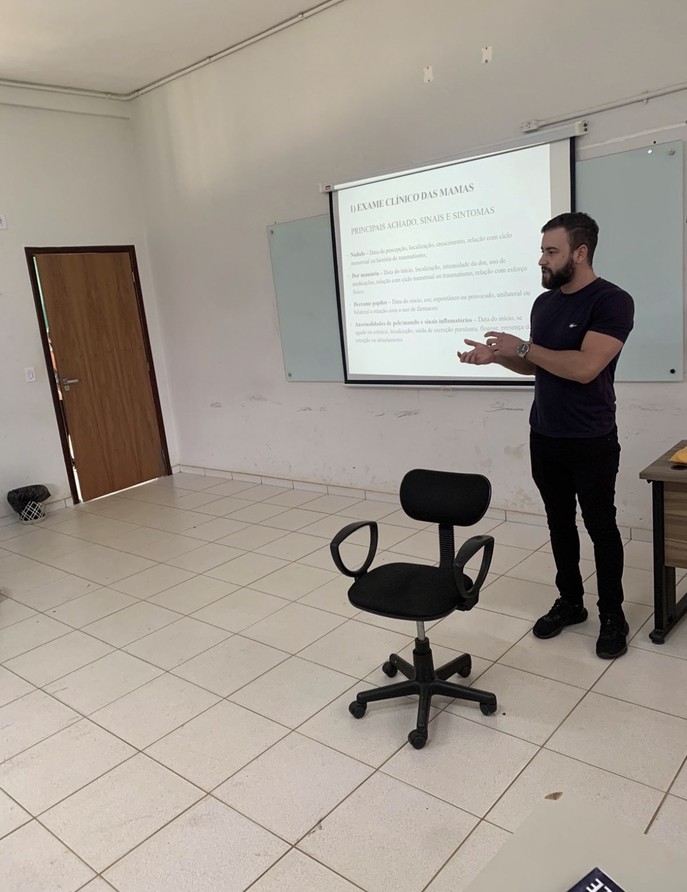
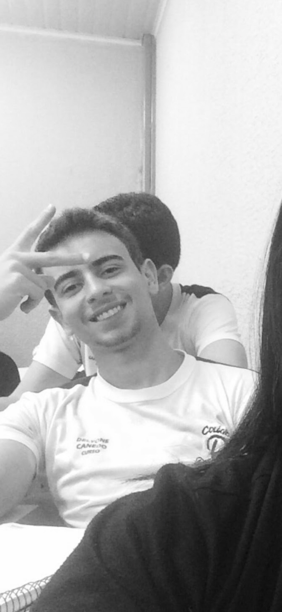
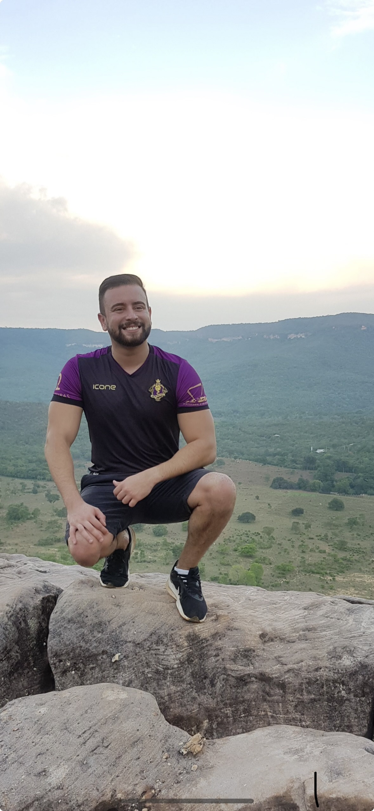
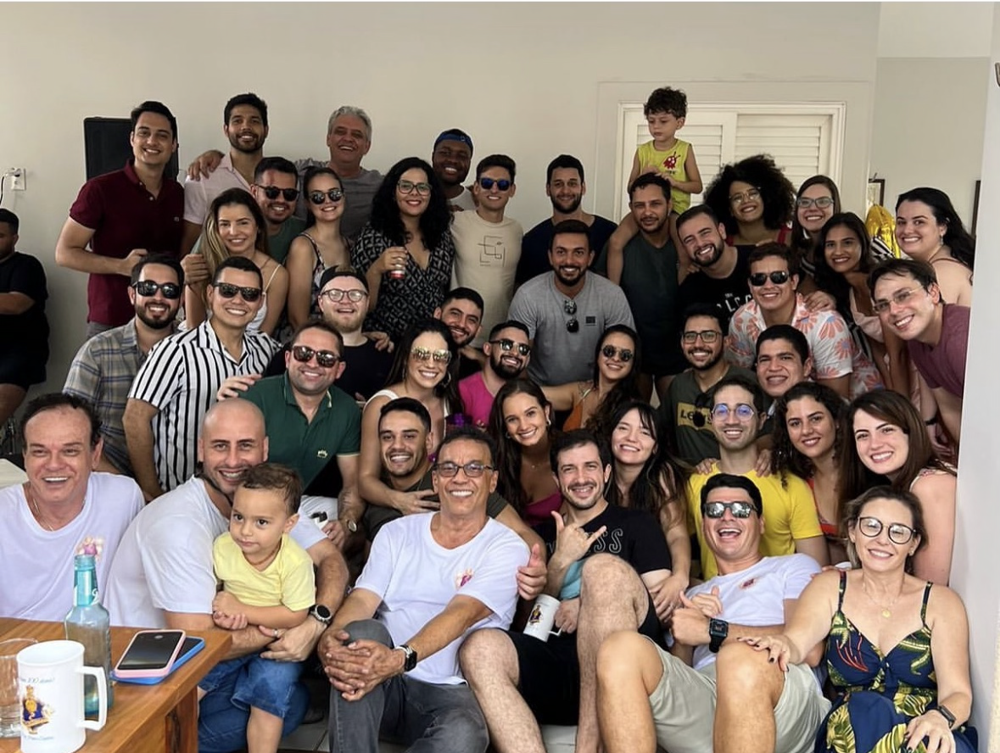

O fundador
Uma página para conhecer a trajetória por trás do Instituto.
O acervo Founder está organizado em diferentes dimensões: biografia, história, formação, certificados, contribuições, currículo e sonhos, intenções e idealizações. A estrutura foi criada para crescer modularmente conforme novos documentos e registros forem publicados.
Acervo visual
Imagens organizadas no acervo do fundador.





Acervo documental
Materiais que já estão presentes na pasta Founder.
Currículo Lattes
Currículo do Sistema de Currículos Lattes de Delyone de Paula Canedo Filho.
Abrir documento → CurrículoTRAC CV
Outro documento curricular presente no acervo.
Abrir documento → CredencialCredential verification · ECFMG
Documento de verificação de credenciais disponível no acervo.
Abrir documento → CertificaçãoAmerican Heart Association · ACLS
Certificação presente na pasta de certificados.
Abrir documento → ContribuiçãoNASA / NSPIRES
Documento de solução/proposta presente no acervo de contribuições.
Abrir documento → VisãoStatement of Need · USA
Documento presente no acervo de sonhos, intenções e idealizações.
Abrir documento →